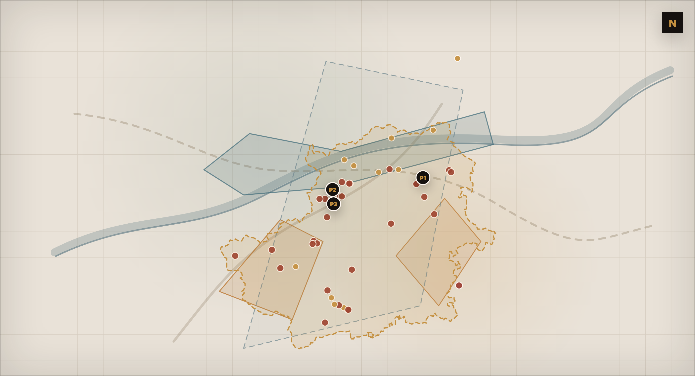

01Real Atlas Map

Total collapseTriggered eventHydraulic overlayLandslide overlaySeismic context
![ARCUS]()
Province-level professional screening for bridge. Generated as an executive decision sheet; full analytical detail is provided in the full PDF and exports.

For bridge interventions in the selected province, ARCUS indicates that preliminary attention should focus on hydraulic compatibility and related checks because the dominant indicator is hydraulic exposure. This is a province-level screening signal and must be translated into site-specific checks by qualified professionals.